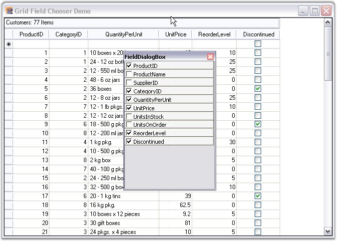

The view of a grid can be customized based on column visibility by using a plug-in utility called Field Chooser. A Field Chooser can be associated to Grid Grouping control to add or remove columns from a grid. It can be done by intializing the FieldChooser class where the constructor takes a parameter as a Grid Grouping control object.
Enabling the Field Chooser allows the user to right-click on a column header and select Field Chooser menu item to view the Field Chooser dialog. This dialog would list all the column names with check boxes beside them. The required columns can be made visible in the gridby selecting the check box adjacent to the required column.
The following code example illustrates the usage of Field Chooser.
|
[C#]
FieldChooser fchooser = new FieldChooser(this.gridGroupingControl1); |
|
[VB.NET]
Dim fchooser As FieldChooser = New FieldChooser(Me.gridGroupingControl1) |

Figure 350: Grid Grouping control with Field Chooser
For more details, refer the following sample:
<Install Location>\Syncfusion\EssentialStudio\[Version Number]\Windows\Grid.Grouping.Windows\Samples\2.0\Grouping Grid Layout\Grid Field Chooser Demo